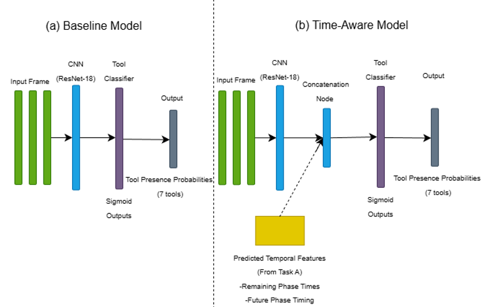
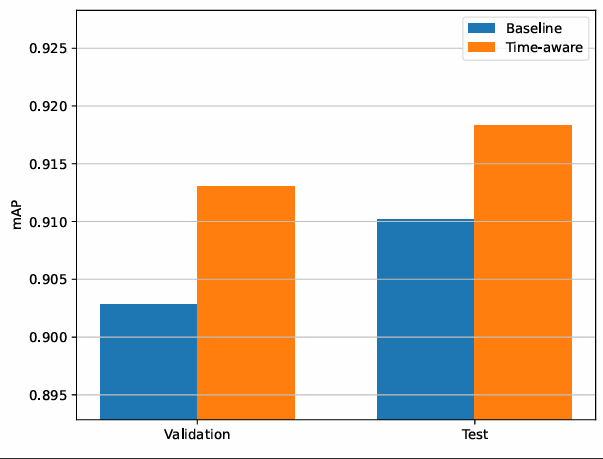

The question
Most gallbladder removals are performed laparoscopically, so every operation leaves a full video record. Models that understand where a procedure is in its workflow could support operating-theatre coordination and act as a second pair of eyes during surgery.
The coursework set two connected tasks on the Cholec80 dataset of 80 annotated procedures. First, does a longer video history improve predictions of when the current phase will end? Second, can those timing predictions act as context that makes a tool detector more reliable?
One backbone, two tasks
Video was downsampled from 25 to 1 frame per second. An ImageNet-pretrained ResNet-18 extracted features from each frame, and a one-directional LSTM modelled their sequence, so predictions used only past and present frames, as a live system would. A small head predicted 14 values: the start and end of each of seven phases.
Times were log-transformed to compress long durations. A masked, weighted loss gave the end of the current phase four times the weight of future phases, reflecting its clinical relevance. The backbone was frozen for the first epochs and then fine-tuned at a lower learning rate.

Results
All numbers in the table are from the 10 held-out test videos.
| Model | Metric | Result |
|---|---|---|
| Timing, 60-frame window | Mean absolute error · within ±60 s | 216 s · 29.2% |
| Timing, 120-frame window | Mean absolute error · within ±60 s | 263 s · 27.7% |
| Tool detection, visual only | mAP · Micro-F1 | 0.910 · 0.885 |
| Tool detection, time-aware | mAP · Micro-F1 | 0.918 · 0.892 |

The longer window did not help. Frames from two minutes earlier probably say little about the current phase, and a shorter window is also cheaper to run in real time.
Timing helped most for bipolar forceps (AP 0.849 to 0.907), with smaller gains for scissors, irrigator and specimen bag. The grasper and hook, used across many phases, changed little, but the clipper fell from 0.994 to 0.966, so the benefit was not uniform even among phase-specific tools. Timing behaves as a weak prior rather than a rule.
Is the improvement real?
Frames from the same video are correlated, so I tested the difference with a paired bootstrap that resampled whole videos 2,000 times. The mAP gain averaged +0.009 with a 95% interval of −0.001 to +0.018 (p = 0.11), so it was not significant. Micro-F1 at a fixed 0.5 threshold decreased significantly in the bootstrap.
The headline table and the bootstrap point in different directions for Micro-F1, and the report does not reconcile them. The safest reading is that timing slightly improved how frames were ranked but did not reliably improve thresholded decisions. Each configuration was also trained only once.
Limits and next steps
The test set's tool-detection mAP is numerically higher than the roughly 81% reported for EndoNet, but the data splits and training setups differ, so this is not a like-for-like comparison.
Surgeons work at different paces, so a model trained on absolute seconds will under- or over-estimate for slow and fast cases. The next steps would be to predict relative progress through each phase, output uncertainty so downstream models can treat timing as a soft hint, and report results separately for fast, typical and slow procedures. The timing features fed into the tool detector during training were also predicted on videos the timing model had already seen.
Project material
- Read the coursework paperPDF · 7 pages · Student ID removed